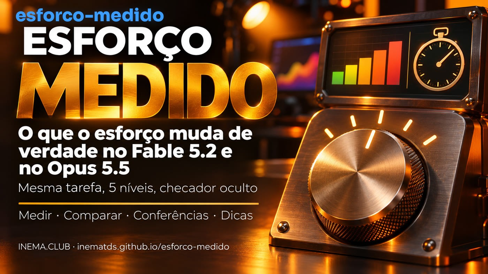

Medi 30 vezes: nas 3 tarefas, o esforço mínimo acertou tudo, igual ao máximo, que no Fable custou cerca de 14× mais. O esforço muda quanto a IA pensa e confere, e o “alto” de um modelo não é o do outro.

Quem usa o Claude escolhe um nível de esforço (de low a max) achando que mais esforço é a IA trabalhando mais tempo e acertando mais. Não é bem assim. O esforço muda quanto o modelo pensa e quantas vezes ele age e confere o próprio trabalho; o tempo e o custo vêm disso. Este kit grátis mostra isso com números: roda a mesma tarefa em cada nível do Fable 5.2 e do Opus 5.5, conta o que o modelo fez e dá a nota com um checador que ele não vê. Junto vêm 14 dicas com fonte. Para ler, não precisa de nada; para medir, Python 3 e o Claude Code.
A documentação da Anthropic diz que o nível “muda como o modelo pensa e quantas chamadas de ferramenta ele faz”. Chamada de ferramenta é cada vez que a IA abre um arquivo, edita, roda um teste ou pesquisa. O tempo que a tarefa leva é consequência, não o botão.
No nível alto o raciocínio de cada passo é mais fundo. No Fable 5.2, a partir do high ele pensa até para responder “oi”.
Mais chamadas de ferramenta: abre mais arquivos, roda mais testes, confere o que fez. No nível baixo ele junta passos e confere menos.
Nos níveis baixos o modelo tende a encerrar antes, listando o que falta ou oferecendo continuar. Aí você volta e pede o resto.
O que o esforço quase não muda: o tamanho da resposta. Para resposta curta ou longa, use o pedido. Fonte: guia de migração da API da Anthropic (Fable 5.2 e Opus 5.5), lido em 12/11/2026.
Os cinco níveis seguem a mesma ordem, mas o raciocínio por trás de cada um muda de modelo para modelo. Comparar “Fable high” com “Opus high” como se fossem iguais engana.
| Claude Fable 5.2 | Claude Opus 5.5 | |
|---|---|---|
| Padrão na API (quando ninguém diz o nível) | high | medium |
| Por onde começar, segundo a Anthropic | high (onde chega a maior parte do ganho) | medium, e testar os vizinhos |
| O que surpreende | o low ficou perto do Fable 5.1 em níveis mais altos | o medium passou o high do Opus 5; o low chegou perto dele em código |
| xhigh e max | xhigh: um pouco mais de nota, muito mais tokens; max: teto, raro | só onde você mediu ganho; no xhigh/max pensa mais por turno que o Opus 5 |
| Armadilha | “pense menos” no prompt não funciona a partir do medium: baixe o nível | quem copiou o nível do Opus 5 roda um nível diferente do que acha |
| Preço na API (por milhão de tokens, entrada/saída) | US$ 8 / US$ 40 | US$ 4 / US$ 20 |
No Claude Code, veja o nível da sessão com /effort status e troque com /effort <nível>; o novo nível vale a partir da próxima mensagem. Ultracode não é um nível: é uma configuração que monta um time de agentes no esforço em que a sessão está.
3 tarefas de código (fácil, caça a erros e calendário com feriados móveis), cada uma em 5 níveis nos dois modelos: 30 rodadas, cópia limpa, checador escondido. Medido em 12/11/2026, uma rodada por combinação.
rodadas com nota máxima: do low ao max, nos dois modelos, todas acertaram tudo.
o custo do Fable 5.2 no max perto do low (US$ 9,78 contra US$ 0,72), e cerca de 25× o tempo (26 min contra 1 min).
mais pensamento no Fable max que no low (132 mil contra 1 mil tokens). É isso que o esforço compra.
arraste a tabela para o lado →
| Soma das 3 tarefas | Nota | Tempo | Pensamento (tokens) | Ferramentas | Conferências | Custo equivalente* |
|---|---|---|---|---|---|---|
| Fable 5.2 · low | 48/48 | 1 min 05 s | 1.015 | 16 | 3 | US$ 0,72 |
| Fable 5.2 · medium | 48/48 | 1 min 26 s | 1.646 | 12 | 4 | US$ 0,83 |
| Fable 5.2 · high | 48/48 | 1 min 53 s | 3.174 | 23 | 7 | US$ 1,05 |
| Fable 5.2 · xhigh | 48/48 | 5 min 03 s | 18.580 | 33 | 10 | US$ 2,21 |
| Fable 5.2 · max | 48/48 | 26 min 42 s | 132.112 | 56 | 25 | US$ 9,78 |
| Opus 5.5 · low | 48/48 | 1 min 04 s | 253 | 11 | 5 | US$ 0,30 |
| Opus 5.5 · medium | 48/48 | 1 min 29 s | 760 | 13 | 4 | US$ 0,39 |
| Opus 5.5 · high | 48/48 | 1 min 58 s | 2.036 | 12 | 4 | US$ 0,48 |
| Opus 5.5 · xhigh | 48/48 | 3 min 35 s | 7.472 | 26 | 10 | US$ 0,79 |
| Opus 5.5 · max | 48/48 | 18 min 06 s | 92.889 | 48 | 16 | US$ 3,77 |
O pensamento subiu em todo degrau, nos dois modelos. As conferências (rodar o código para checar) cresceram pouco do low ao high (Fable 3 → 7; no Opus quase não mudaram, 5 → 4) e saltaram no xhigh e no max (Fable 25, Opus 16): lá o modelo escreve scripts de teste, procura casos de borda e confere de novo.
A nota. Nestas tarefas curtas e bem descritas, o nível mais baixo já resolveu. O Opus 5.5 no low acertou tudo pelo menor custo (US$ 0,30), cerca de 32× menos que o Fable 5.2 no max.
* Custo que o Claude Code calcula pela tabela da API (somado antes de arredondar); na assinatura você paga em limite, então ~14× e ~32× são razões de custo equivalente, não do seu limite. Pensamento = tokens de raciocínio contados no registro de cada rodada (no RESULTADO.md, o número entre parênteses). Leia com cuidado: são tarefas curtas, uma rodada cada. Elas não mostram onde o esforço alto ajuda: segundo a Anthropic, em trabalho longo o esforço baixo tende a parar antes de terminar, e problemas abertos e difíceis ganham com mais esforço. Nestas rodadas nenhum modelo parou antes nem chamou subagente. Quadros completos: exemplos/.
Repetição (ruído): Fable 5.2 no carrinho, low e high 3 vezes cada: todas 12/12; low 26–33 s, high 39–49 s, e o high sempre pensou mais. O número de ferramentas variou de 3 a 12 entre rodadas iguais: compare pensamento e tempo, não uma contagem solta de ferramentas.
Cada dica tem a fonte. A lista completa, com os detalhes, está em dicas/DICAS.md.
/effort status.ultracode não mexe no nível; a flag --effort ultracode liga e também põe em xhigh.Daqui para baixo é a parte técnica: instalar, rodar o medidor e criar uma tarefa sua. Você não precisa desta parte para entender o que está acima.
Três peças: o medidor, o leitor de rodadas e as tarefas com checador oculto.
Roda a tarefa em cada modelo × esforço, cada rodada numa cópia limpa e com um HOME temporário: o modelo não lê o seu CLAUDE.md, hooks, plugins, skills nem MCP. Usa a sua assinatura (tira a ANTHROPIC_API_KEY do ambiente).
Lê o registro de cada rodada e conta ferramentas por tipo, conferências (código rodado para checar), edições, releituras, subagentes, tokens de pensamento, tempo, custo equivalente e se o fim oferece continuar.
3 tarefas com checador oculto: intervalos (fácil), carrinho (6 erros escondidos) e calendario (5 funções com feriados móveis). A IA vê poucos testes; a nota vem de muitos.
Cada linha do quadro final é uma rodada assim.
Nada de API: tudo pela assinatura.
Só a biblioteca padrão.
python3 --versionCom acesso ao Fable 5.2 e ao Opus 5.5 na sua assinatura.
claude --versionCada rodada gasta o limite da assinatura. O max demora e gasta mais: comece com 2 ou 3 níveis.
# comece pequeno ./medir.sh carrinho -m opus -e low,medium
Comandos reais do repositório.
Clone e rode os testes (sem rede).
git clone https://github.com/inematds/esforco-medido.git cd esforco-medido python3 -m unittest discover tests # 18 testes OK
Duas rodadas rápidas para ver funcionando.
./medir.sh carrinho -m opus -e low,medium
Fable e Opus, low → max (10 rodadas). Use -r 3 para repetir cada uma antes de tirar regra.
./medir.sh calendario # padrão: -m fable,opus -e low,medium,high,xhigh,max ./medir.sh calendario -m fable -e low,high -r 3
Nota oculta, ferramentas, conferências, edições, tempo, tokens e custo equivalente de cada rodada. ⚠ marca rodada em que o Claude Code usou outro modelo.
cat resultados/calendario-*/RESULTADO.md
Escolha o nível mais baixo que acerta. Se o modelo parar antes de terminar, cole o bloco da Anthropic no CLAUDE.md.
# no Claude Code /effort medium # bloco "terminar o trabalho" printf '\n# Terminar o trabalho\n' >> CLAUDE.md && cat dicas/terminar-o-trabalho.pt.txt >> CLAUDE.md
As mesmas contagens numa sessão já gravada do Claude Code.
python3 relatorio.py sessao ~/.claude/projects/<projeto>/<sessao>.jsonl
tarefas/<nome>/projeto/ (o código que a IA recebe), pedido.txt (o pedido) e oculto/checar.py <pasta> que imprime NOTA n/total.
./medir.sh minha-tarefa -e low,high
É a medida daquela tarefa, naquele dia. Repita com -r 3 e use uma tarefa parecida com o seu trabalho.
O dólar do quadro é o que o Claude Code calcula pela tabela da API. Na assinatura você paga em limite.
Sem o HOME temporário, o seu CLAUDE.md e os seus hooks entram em todas as rodadas e mudam o comportamento. --sem-isolar mede o seu ambiente de verdade.
Lá o login fica no Keychain: se o isolamento não achar a credencial, o script avisa e roda sem isolar.
Kit irmão: esforço certo audita em que modelo e esforço cada parte do seu projeto roda e compara dois níveis num trabalho seu.